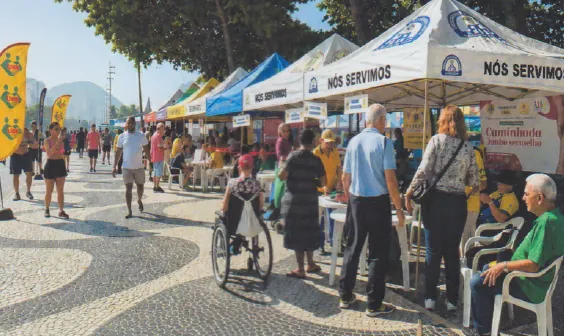

O clube
O Lions Clube Rio de Janeiro Princesa do Leme consolida-se como uma venerável unidade de serviço do Distrito LC-1, possuindo uma robusta trajetória de articulação social na Zona Sul da capital fluminense.
Oficialmente fundada em 29 de janeiro de 1997 e chancelada com sua Carta Constitutiva em 26 de fevereiro do mesmo ano (sob o registro nº 3230-059170), a agremiação nasceu sob o apadrinhamento do Lions Clube RJ Leme.
Liderada em sua gênese pela presidente fundadora Therezinha Maria do Espírito Santo e estruturada pelos padrinhos Sergio Luiz Canedo de Freitas e Manoel Bastos Marques, com orientação de Gerson Villela Souto, a instituição forjou uma identidade pautada pela erudição e pelo rigor leonístico.
Este esmero reflete-se na preservação de seu acervo literário, notadamente a publicação de seu boletim informativo Elos de Vida, editado por Sônia Baptista da Cunha, e na contínua promoção de encontros intelectuais, palestras e magnas celebrações de aniversário em redutos tradicionais da sociedade carioca, como o Clube Monte Líbano.
COLEPE

A magnitude da atuação filantrópica do Princesa do Leme ganha sua máxima expressão por meio de sua integração ao COLEPE, um dos mais longevos e superlativos projetos de prestação continuada de serviços comunitários do Brasil.
O acrônimo, que congrega esforços dos clubes da região de Copacabana, Leme e Bairro Peixoto, designa uma monumental iniciativa de saúde pública e cidadania, com atividades ininterruptas desde 24 de setembro de 1995.
Operando de forma estruturada e mensal nas calçadas da histórica Avenida Atlântica, em Copacabana, o projeto amalgama a força de trabalho de múltiplos clubes do Distrito LC-1 sob a governança de um comitê dedicado.
Serviços oferecidos
As trincheiras assistenciais do COLEPE oferecem um vasto leque de serviços inteiramente gratuitos à população. As intervenções englobam desde a aferição de pressão arterial e os primordiais testes de glicemia até orientações especializadas nas esferas de oftalmologia, dermatologia e oncologia.
A ação transborda o escopo estritamente biomédico ao incorporar suporte em direitos legais e extensas campanhas educativas preventivas.
Ao longo de quase três décadas de implacável dedicação ao próximo, o comitê já contabiliza a impressionante marca de mais de 250.000 atendimentos comunitários prestados.
O envolvimento do Princesa do Leme nestas operações reafirma o papel do clube não apenas como guardião da cultura leonística, mas como um esteio insubstituível na monumental engrenagem de mitigação das vulnerabilidades sanitárias e sociais no coração da Zona Sul carioca.